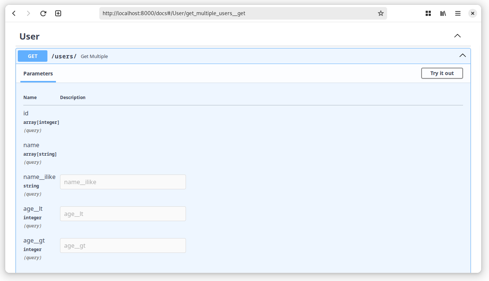

pydantic-filters¶


Source Code: https://github.com/so-saf/pydantic-filters
Describe the filters, not implement them! A declarative and intuitive way to describe data filtering and sorting in your application.
Features¶
- Filtering by the models themselves as well as by related.
- Built-in pagination and sorting.
- Lots of settings and possible customizations.
- The only required dependency is Pydantic. You can use the basic features without being attached to specific frameworks, or use one of the supported plugins and drivers:
- Plugins:
- FastAPI >= 0.100.0
- Drivers:
- SQLAlchemy >= 2
Installation¶
A Simple Example¶
BaseFilter is just a pydantic model, it should be treated similarly
Let's imagine you have a simple user service with the following SQLAlchemy model:
from sqlalchemy.orm import DeclarativeBase, Mapped, mapped_column
class Base(DeclarativeBase):
pass
class User(Base):
__tablename__ = "users"
id: Mapped[int] = mapped_column(primary_key=True)
name: Mapped[str]
age: Mapped[int]
Describe how you would like to filter users using BaseFilter.
from typing import List
from pydantic_filters import BaseFilter
class UserFilter(BaseFilter):
id: List[int]
name: List[str]
name__ilike: str
age__lt: int
age__gt: int
BaseFilter is just a pydantic model, it should be treated similarly
Next, you need to apply a filter to some query:
from sqlalchemy import select
from pydantic_filters.drivers.sqlalchemy import append_filter_to_statement
statement = select(User)
filter_ = UserFilter(name__ilike="kate", age__lt=23)
stmt = append_filter_to_statement(
statement=statement, model=User, filter_=filter_,
)
And get something like:
The filter can be used in conjunction with one of the supported web frameworks:
from typing import Annotated
from fastapi import FastAPI, APIRouter
from pydantic_filters.plugins.fastapi import FilterDepends
router = APIRouter()
@router.get("/")
async def get_multiple(
filter_: Annotated[UserFilter, FilterDepends(UserFilter)],
):
...
app = FastAPI(title="User Service")
app.include_router(router, prefix="/users", tags=["User"])
